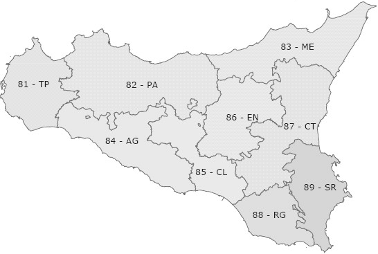

12.1 Autocorrelazione spaziale: gli indici di Moran e di Geary
Il territorio, con le sue specifiche caratteristiche, assume un ruolo essenziale per interpretare correttamente un aggregato. Spesso gli aggregati assumono valori simili in territori tra loro vicini e valori dissimili in aree tra loro lontane. Per esempio, Lombardia e Sicilia hanno livelli di PIL pro capite molto diversi, mentre Sicilia e Calabria registrano valori tra loro più simili (cosiddetta prima legge di Tobler): così come valori temporalmente più vicini sono in genere maggiormente correlati, allo stesso modo aree spazialmente più prossime tendono a essere più correlate di aree lontane.
L’esistenza di una forte correlazione spaziale, positiva o negativa, implica l’assenza di indipendenza delle osservazioni; è pertanto sempre opportuno verificare la presenza di una forte dipendenza dei dati dallo spazio.
Per il calcolo dell’autocorrelazione si può fare ricorso ai tradizionali indici di correlazione, corretti con un’opportuna matrice \(W\) che segnala la vicinanza spaziale delle aree territoriali. La forma più semplice è quella di una matrice di contiguità, che assume valore 0 in assenza di confini comuni tra le aree e 1 nel caso contrario. Tuttavia, si potrebbe fare ricorso a diverse definizioni di contiguità, ovvero a pesi basati sull’inverso delle distanze geografiche tra i centri delle aree. La scelta del tipo di contiguità o del peso, e delle tecniche per misurare le distanze e costruire i centri, è relativamente arbitraria, e ciò costituisce un evidente limite di questi strumenti.

Figura 12.1 – Le 9 province della Regione Sicilia
Facciamo un esempio ricorrendo alle 9 province della Regione Sicilia, i cui confini sono riportati nella Figura 12.1 con sigla e relativo codice ISTAT. Ponendo 1 ove confinanti e 0 altrimenti si ottiene la seguente matrice quadrata (si pone 0 anche sulla diagonale principale), costruita a partire dalle informazioni sulla contiguità presenti nel file confinanti.csv, che riporta anche il valore aggiunto pro capite per gli anni 2001 e 2006
import numpy as npimport pandas as pdimport matplotlib.pyplot as pltmatt = pd.read_csv("data/confinanti.csv", sep=";", index_col="province")matw = matt.iloc[:, 0:9]print(matw)
TP PA ME AG CL EN CT RG SR
province
TP 0 1 0 1 0 0 0 0 0
PA 1 0 1 1 1 1 0 0 0
ME 0 1 0 0 0 1 1 0 0
AG 1 1 0 0 1 0 0 0 0
CL 0 1 0 1 0 1 1 1 0
EN 0 1 1 0 1 0 1 0 0
CT 0 0 1 0 1 1 0 1 1
RG 0 0 0 0 1 0 1 0 1
SR 0 0 0 0 0 0 1 1 0
W = matw.to_numpy()vap01 = matt["vap01"].to_numpy(float)vap06 = matt["vap06"].to_numpy(float)
procimportdatafile="data/confinanti.csv"out=matt dbms=dlm replace;delimiter=";"; getnames=yes;run;procprintdata=matt noobs; var province TP--SR; run;
Per ottenere l’autocorrelazione spaziale del PIL pro capite delle 9 province siciliane nel 2001 e nel 2006, facciamo ricorso all’indice I di Moran, definito come
con valore centrale (autocorrelazione nulla) pari a \(-1/(n-1)\), tendente a 0 per \(n\) sufficientemente grande. In genere, si può dire che, se l’indice calcolato è minore del valore centrale, si ha autocorrelazione negativa, se è maggiore si ha autocorrelazione positiva.
Un altro noto indice di autocorrelazione spaziale è il c di Geary
Quando questo indice è maggiore di 1 vi è evidenza di autocorrelazione negativa, se è inferiore a 1 diremo che vi è autocorrelazione positiva, mentre l’autocorrelazione è nulla se il valore della statistica è prossimo all’unità.
Calcoliamo l’indice di Moran per il PIL pro capite del 2001
num <-matrix(0,9,9)for (i in1:9) for (j in1:9) num[i,j] <- (vap01[i]-mean(vap01))*(vap01[j]-mean(vap01))*matw[i,j]num2 <-sum(num)den <-0for (i in1:9) den[i] <- (vap01[i]-mean(vap01))^2den1 <-sum(den)IMoran <-9/sum(matw)*num2/den1IMoran
[1] -0.01025151
centr <--1/(9-1); centr
[1] -0.125
IMoran > centr
[1] TRUE
def moran(x, W): z = x - x.mean()returnlen(x) / W.sum() * (z @ W @ z) / np.sum(z **2)def geary(x, W): z = x - x.mean() diff2 = (x[:, None] - x[None, :]) **2return (len(x) -1) / (2* W.sum()) * np.sum(diff2 * W) / np.sum(z **2)IMoran = moran(vap01, W)centr =-1/ (9-1)print(IMoran, centr, IMoran > centr)
-0.010251513230766713 -0.125 True
prociml;use matt; readallvar {TP PA ME AG CL EN CT RG SR} into W;readallvar {vap01 vap06} into V; close matt;start moran(x, W); z = x - mean(x);return( nrow(x)/sum(W) * (z` * W * z) / ssq(z) );finish;start geary(x, W); n = nrow(x); z = x - mean(x); D = (repeat(x, 1, n) - repeat(x`, n, 1))##2;return( (n-1)/(2*sum(W)) * sum(D # W) / ssq(z) );finish; IMoran01 = moran(V[,1], W); CGeary01 = geary(V[,1], W); IMoran06 = moran(V[,2], W); CGeary06 = geary(V[,2], W); centr = -1/(9-1);print IMoran01 CGeary01 IMoran06 CGeary06 centr;quit;
numc <-matrix(0,9,9)for (i in1:9) for (j in1:9) numc[i,j] <- ((vap01[i]-vap01[j])^2)*matw[i,j]CGeary <- (8/(2*sum(matw)))*sum(numc)/sum(den)CGeary
[1] 0.8578865
print(geary(vap01, W))
0.8578864736738886
/* si veda il blocco precedente: CGeary01 */
Poiché l’indice di Moran è alla destra del valore centrale, si può affermare che nel 2001 esiste una debole autocorrelazione positiva del PIL pro capite tra le province siciliane. Identica conclusione è segnalata dall’indice di Geary che, infatti, assume un valore inferiore all’unità. Allo stesso modo, per il PIL pro capite del 2006 otteniamo
num <-matrix(0,9,9)for (i in1:9) for (j in1:9) num[i,j] <- (vap06[i]-mean(vap06))*(vap06[j]-mean(vap06))*matw[i,j]num2 <-sum(num)den <-0for (i in1:9) den[i] <- (vap06[i]-mean(vap06))^2den1 <-sum(den)IMoran <-9/sum(matw)*num2/den1IMoran
numc <-matrix(0,9,9)for (i in1:9) for (j in1:9) numc[i,j] <- ((vap06[i]-vap06[j])^2)*matw[i,j]CGeary <- (8/(2*sum(matw)))*sum(numc)/sum(den)CGeary
[1] 0.750957
print(geary(vap06, W))
0.750957004325621
/* si veda il blocco precedente: CGeary06 */
con una più forte evidenza di autocorrelazione positiva nel 2006 rispetto al 2001.
12.2 Cluster analysis
Ogni territorio possiede caratteristiche specifiche in grado di influenzare un fenomeno, economico o sociale che sia. Inoltre, molti di questi effetti specifici dipendono dalla localizzazione spaziale del territorio, poiché in genere due aree vicine mostrano comportamenti più simili di quanto non avvenga per aree distanti. È dunque legittimo ritenere che territori prossimi manifestino andamenti macroeconomici simili, costituendo di fatto macroaree sufficientemente omogenee al proprio interno; è tipicamente il caso del Centro-Nord e del Mezzogiorno d’Italia. La cluster analysis è dunque di grande utilità nell’individuare aree simili rispetto a certe caratteristiche.
Facciamo qui un esempio con variabili metriche con identica unità di misura. Supponiamo di esaminare le 9 province siciliane con riferimento alla produttività oraria del lavoro, espressa in euro, nell’industria tessile (\(X\)) e nell’industria meccanica (\(Y\))
data prod;input provincia X Y @@;datalines;112232252031627481265552167035718528486495169;run;
Calcoliamo la matrice delle distanze euclidee (naturalmente sono possibili altre scelte, ma questa è tra le più semplici e adottate). Poiché la distanza euclidea tra due punti \(z_{i}\) e \(z_{j}\) è
prociml;use prod; readallvar {X Y} into Z; close prod; d = distance(Z, "L2")##2; /* distanze euclidee al quadrato */print d; create dist from d; append from d; close dist;quit;
Adesso ci serve un criterio per aggregare le aree, per esempio la distanza minima (o single linkage), in base al quale i due punti con il valore minimo vengono aggregati in un solo punto
/* la matrice è stampata dal blocco precedente (print d) */
Esistono altri criteri, quali la distanza massima, la distanza media e altri ancora, ma la distanza minima è forse la scelta più intuitiva e semplice. La distanza minima tra il raggruppamento formato dai punti \(a\) e \(b\) e quello formato dal punto \(c\) è dunque \(d(ab,c)=\min \left\{d(a,c),d(b,c)\right\}\)
/* la tabella "Cluster History" di PROC CLUSTER riporta, passo per passo, i gruppi uniti e la distanza minima ("Minimum Distance") */
Al primo passo si uniscono i punti 3 e 1 e al secondo i punti 9 e 8. Al terzo passo si uniscono il punto 3, di cui già fa parte l’1, e il punto 2; pertanto il gruppo è formato dai punti 1, 2 e 3. Al quarto passo si uniscono i punti 6 e 4 e al quinto 6 e 5, quindi il cluster del quinto passo è formato dai punti 4, 5 e 6. Così procedendo, il sesto gruppo contiene i punti 1, 2, 3 e 7, il settimo i punti 1, 2, 3, 4, 5, 6 e 7 e l’ottavo tutti i precedenti, includendo quindi tutti i nove punti.
Riprendendo l’esempio delle 9 province siciliane, potremo dire che le province 1 (Trapani) e 3 (Messina) sono le prime a manifestare una forte somiglianza con riferimento alla produttività oraria del lavoro nell’industria tessile e meccanica; seguono le province 8 (Ragusa) e 9 (Siracusa), e così via.
Se si svolge la procedura di aggregazione fino all’ultimo passo, tutte le unità si troveranno comunque riunite in un unico gruppo; sarà invece necessario arrestare la procedura al momento più opportuno per individuare un numero limitato di gruppi. A tale scopo si può ricorrere a un indice di similarità, scegliendo l’aggregazione corrispondente alla variazione, passo dopo passo, più significativa (Figura 12.2)
/* indice di similarità dalle distanze di aggregazione di PROC CLUSTER */prociml;use dist; readallvar ("COL1":"COL9") into D; close dist; call symputx("dmax", max(D));quit;data simil;set albero;where _ncl_ < 9; passo = 9 - _ncl_; simil = round((1 - _height_/&dmax)*100, 0.01);run;procsortdata=simil; by passo; run;procsgplotdata=simil noautolegend;title"Similarità";series x=passo y=simil; refline 4 / axis=x lineattrs=(pattern=dash); xaxis label="Passi"; yaxis label="Valori";run;
La Figura 12.2 riporta l’andamento dell’indice di similarità, segnalando il passo 4 come candidato a definire i cluster; nello specifico, ciò implica la suddivisione in 5 gruppi: {1,2,3}, {8,9}, {4,6}, {5} e {7}.
12.3 Analisi fattoriale e componenti principali
L’analisi fattoriale è un’altra tecnica utilmente applicabile all’analisi di unità territoriali. Supponiamo di conoscere l’avanzo corrente (\(X1\)) e l’accreditamento finanziario (\(X2\)) di 12 amministrazioni comunali. Siamo interessati a una sintesi dei dati, in modo da poter meglio rappresentare la situazione contabile delle unità in esame. L’analisi fattoriale ci può essere di aiuto, poiché riassume l’informazione in un numero ridotto di nuove variabili (i fattori) rispetto a quelle originali. In genere, per ogni variabile \(x\) definiremo
dove \(F_{j}\) è il \(j\)-esimo fattore comune a tutte le \(x_{i}\), mentre \(U_{i}\) rappresenta l’\(i\)-esimo fattore unico. Il principale metodo di estrazione dei fattori si basa sulle componenti principali, che altro non sono che combinazioni lineari delle variabili; in particolare, la prima componente raccoglie la quota maggiore della varianza, la seconda (non correlata con la prima) la quota maggiore della varianza rimanente, e così via. Per scegliere il numero di fattori al quale arrestare l’estrazione si fa riferimento proprio alla percentuale di varianza spiegata da ciascun fattore.
Ipotizziamo che lo stato contabile delle nostre 12 amministrazioni comunali sia descritto dalle seguenti due variabili
data comuni;input X1 X2 @@; comune = _n_;datalines;16812101361121089 -184765 -33 -12 -300;run;
Procediamo con l’estrazione dei fattori, notando l’assenza di differenze in alcune statistiche tra le variabili originali e quelle centrate sulla media
proc standard data=comuni mean=0out=centrate; var X1 X2; run;data entrambe;merge comuni centrate(rename=(X1=X1m X2=X2m));run;proccorrdata=entrambe cov; var X1 X2 X1m X2m; run;
prociml;use comuni; readallvar {X1 X2} into X; close comuni; S = cov(X); call eigen(valori, vettori, S);print valori vettori;quit;
È possibile ottenere lo stesso risultato procedendo a un calcolo passo dopo passo. L’equazione generale è
\[
(S-\lambda I)w=0
\tag{12.5}
\]
dove \(\lambda\) rappresenta l’autovalore e \(w\) l’autovettore. Escludendo la soluzione banale \(w=0\), avremo l’equazione caratteristica \(|S-\lambda I|=0\), ovvero
proccorrdata=punteggi noprob nosimple;var Prin1 Prin2; with X1 X2;run;
Le componenti sono tra loro indipendenti e la prima risulta fortemente e positivamente correlata alle due variabili originarie; la seconda componente appare negativamente correlata alla prima variabile e positivamente alla seconda, ma con debole intensità. È quindi più difficile attribuire un significato a quest’ultima componente, mentre la prima può rappresentare efficacemente il grado di buona condizione contabile delle unità territoriali, con punteggi maggiori per le amministrazioni più virtuose. D’altronde, con sole due variabili di partenza, apparirebbe davvero poco utile utilizzare entrambe le componenti; infatti la varianza spiegata dalla prima è sufficientemente elevata
/* la quota di varianza spiegata è nella tabella "Eigenvalues" di PROC PRINCOMP */procsortdata=punteggi; by Prin1; run;procprintdata=punteggi noobs; var comune Prin1; run;
In conclusione, la condizione contabile migliore è quella dell’amministrazione indicata nell’esempio con il numero 1, mentre la peggiore è quella dell’amministrazione 11.
Gli approfondimenti metodologici sugli argomenti di questo capitolo esulano dagli scopi del volume.